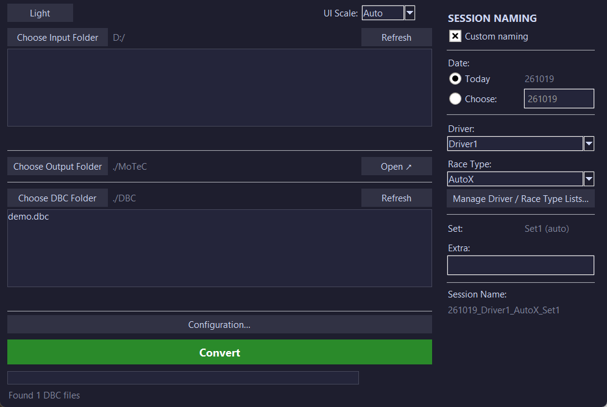

NewLogConverterNewLogConverter
EesmärkGoal
Teisendada Kvaseri andmelogeri mälukaardi logid (.kmf) MoTeC i2 analüüsitarkvara jaoks (.ld).
Convert Kvaser data-logger memory-card logs (.kmf) into MoTeC .ld files for analysis in MoTeC i2.
KirjeldusDescription
Meeskonna andmeanalüüsi tööriist: loeb Kvaseri .kmf-logid, dekodeerib signaalid DBC-faili abil ja kirjutab MoTeC .ld-failid, mis avanevad nii i2 Standardis kui ka i2 Pros. Valmisrakendus on olemas Windowsile ja Linuxile, nii et meeskonnaliikmed ei pea Pythonit paigaldama.
A data-analysis tool for the team: it reads Kvaser .kmf logs, decodes the signals with a DBC file and writes MoTeC .ld files that open in both i2 Standard and i2 Pro. Prebuilt executables for Windows and Linux mean teammates don't need to install Python.
PildidImages
